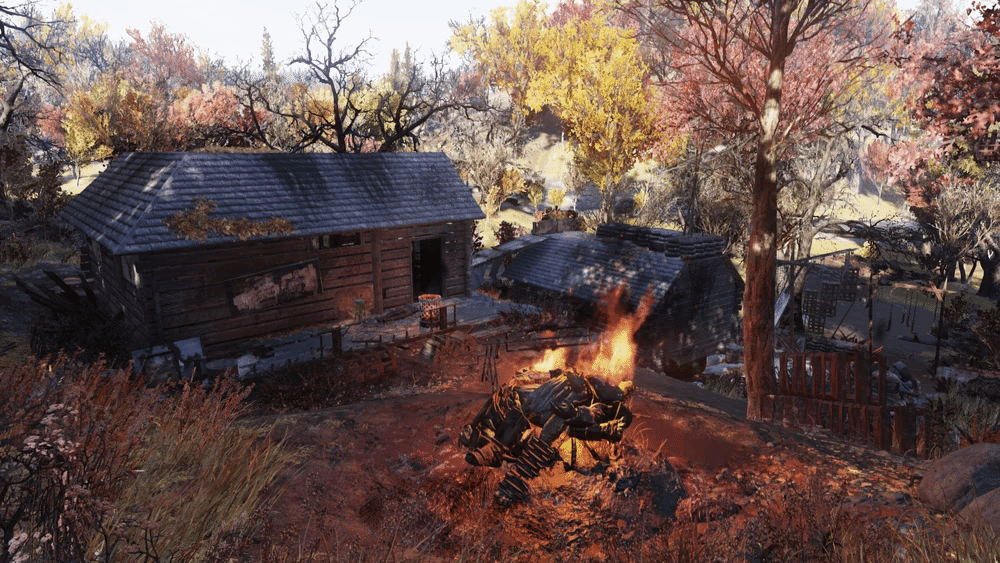
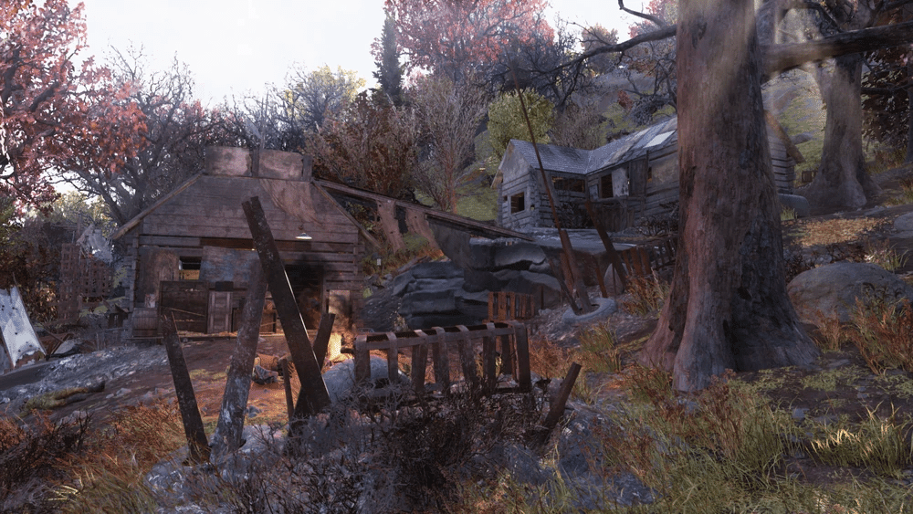
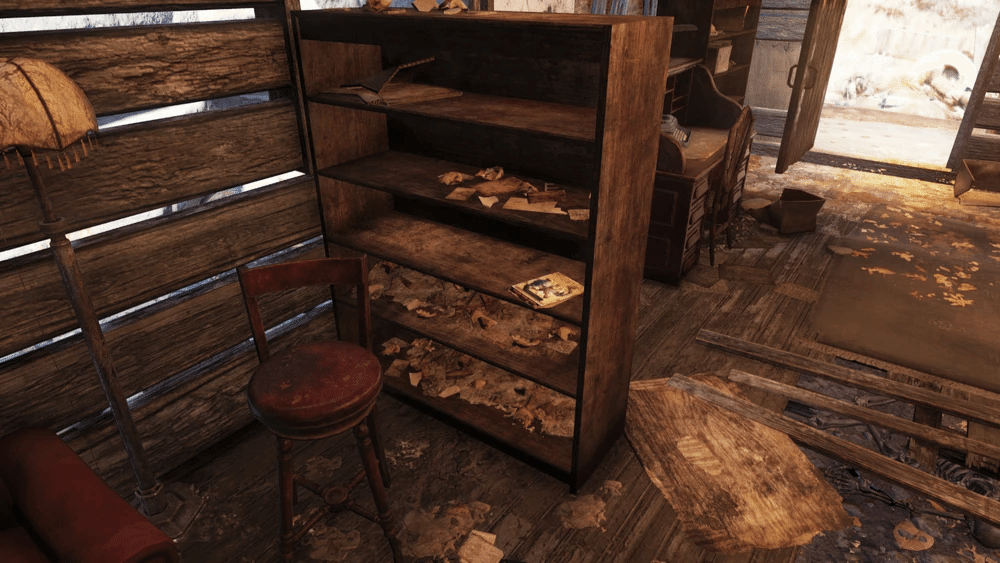

ツイン・パイン・キャビン
「ツイン・パイン・キャビン」は、『Fallout 76』に登場するロケーションです。
元々はスーパーミュータントのキャンプでしたが、プレイヤーが到着する頃にはブラッド・イーグルに占拠されています。

1. 背景
紛争地帯化:
スコーチとスーパーミュータントによる支配権をめぐる多数の攻撃の結果、この快適な二棟のキャビンは小さな戦場と化しました。ブラッド・イーグルスの占拠:
2103年までに、ブラッド・イーグルスがクリーチャーを殺害してこの場所に居を構えました。スーパーミュータント:
占拠中に4人のメンバーを失いましたが、ブラッド・イーグルスは1体のスーパーミュータントを生かし、情報を聞き出しました。
そのミュータントは「他にも来るだろう」と告げましたが、ブラッド・イーグルスはそれを刺し殺し、他の死体を焼却しました。

2. レイアウト
ツイン・パイン・キャビンは、かつてスーパーミュータントのキャンプとして使われていた二棟のキャビンです。
アクセス:
ハイウェイからの土の道が南へ延びており、二棟のキャビンへと続いています。配置:
西側のキャビンは、東側のキャビンよりも尾根の高い位置にあります。
場所の至る所に地雷が散らばっています。
東側のキャビン（下側）
内容物:
緑色の軍用トランクと冷蔵庫が含まれています。隠された場所:
床板の下には、手錠をかけられた2体の骸骨が隠されています。外側:
青い車の近く、キャビンの裏側にはクッキングステーションがあります。
西側のキャビン（上側）
内容物:
ロッカー、救急キット、クーラー、そして武器作業台が含まれています。木材:
クッキングステーションで使用するための木材の山が西側のキャビンのポーチの下に見つかります。屋根へのアクセス:
西側のキャビンの外の張り出しから、東側のキャビンの屋根と木箱に渡る傾斜路があります。隠された金庫:
張り出しの下には、ロックレベル0の金庫があります。
3. 注目すべきルート
スーパーミュータントの問題
西側のキャビンの机の上にあるメモ。
このキャンプを奪うのに、ブラッド・イーグルスを4人失った。
スーパーミュータントを一人だけ生かしておいて、情報を聞き出したが、「他にも来る」だと……当たり前だ。
俺はそいつの喉にナイフを突き刺し、残りの死体は燃やした。
現在、この場所の要塞化を進めている。もっと来ても、俺たちは準備万端だ。
ブラッド・イーグルの誓い
西側のキャビンの木製の棚にあるホロテープ。
弱者を叩き潰せ！ 俺たちの足元で！
戦争の準備だ！ 血の海に浸れ！
ブラッド・イーグルス！ 恐れるものなし！
ブラッド・イーグルス！ お前の耳が欲しいだけだ！
ハッハッハッハッハッハッ！

雑誌
キャビンの中の棚
4. 注記
Wastelanders以前:
このロケーションにはスコーチが住んでいました。
Wastelandersアップデートで、外観が変更され、現在住んでいるブラッド・イーグルスが追加されました。アップデート前は西側のキャビンにミニ・ニュークが見つかりましたが、削除されました。
ここの家の中のブラッドイーグルさん、良く二段ベッドに挟まってます。
その近くに雑誌があるのでいつも気になってしまう。
みょんみょん音楽鳴らしてたりブラッドイーグルのCampの中では平和な方です。
まぁ背景はスパミュ追い出して焼いたり凄いですけど。
This article was created by translating and editing Twin Pine Cabin from Nukapedia: The Fallout Wiki.
Licensed under the Creative Commons Attribution-Share Alike License (CC BY-SA 3.0).
コミュニティ維持のため、寄付を受け付けております。
> COMMENTS